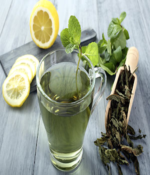
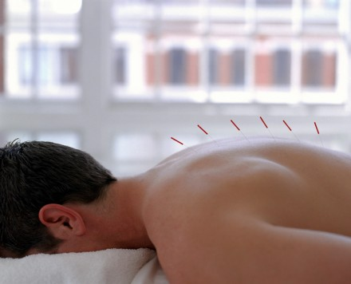

Tés e infusiones: su uso en la medicina alternativa

Las infusiones o tés nos brindan una gran variedad de
beneficios a la salud gracias a sus propiedades naturales. Desde
tiempos inmemoriales se usa para aliviar malestares físicos e
inclusive emocionales, y es que ofrecen desde antioxidantes hasta un
bienestar relajante, lo que es una buena opción para antes de
dormir.
El té o infusión, no sólo son de hierbas sino también de
frutas. Hay combinaciones como té de canela con manzana, manzanilla
con anís o fresa y kiwi etc. Como sea, nos otorgan nutrimentos
buenos para la salud. Una de las interrogantes que saltan a relucir
es, ¿qué es mejor, tomar té natural o en bolsitas? La respuesta es
positiva, ambas son buenas ya que son una fuente natural rica en
nutrimentos y minerales aunque, por supuesto, la de bolsitas viene
procesada por fabricación. ¡Tú elijes!
Médicos promueven visión integradora para el sistema de
salud tradicional

Doctores de hospitales públicos y gestores de medicina
alternativa apuestan por una mirada integradora del sistema de salud
tradicional que incorpore la cercanía, participación y humanización
en los tratamientos de las enfermedades de los pacientes, en
especial, malestares crónicos. inShare Imprimir Claves:
humanización, medicina natural, tratamientos alternativos Es sabido
que la salud pública tiene deficiencias estructurales,
presupuestarias y de calidad de profesional. No obstante, médicos
también advierten que hace falta una visión integradora en el
sistema de salud donde se sume la medicina natural y alternativa.
El
doctor Jorge Lastra Torres, director del Hospital Luis Calvo
Mackenna, expuso sobre los avances en políticas públicas para la
inclusión de las medicinas complementarias en el sistema de salud
oficial y destacó la incorporación de la acupuntura, homeopatía y
naturopatía, igual que el estudio de la pertinencia de reconocer, o
no, a las terapias florales y a la mesoterapia. Igualmente, el
profesional opinó que si las ventajas de las medicinas integrativas
se añaden a los retos de la autoridad, cuya responsabilidad, a su
juicio, no es sobre los pacientes sino que sobre la salud de la
población, se puede hacer un aporte significativo. “Hoy día tenemos
cada vez más claro que el proceso de sanación es un proceso social.
Los procesos sociales no son individuales, se construyen en la
conversación, en el discurso, en la cercanía.
Aquí hay un segundo
desafío y una ventaja de las medicinas integrativas porque nos hacen
la pregunta respecto del sentido y el modelo de aproximación nos
ayuda a construir sentido de lo que nos pasa y finalmente, ahí hay
una clave que nos puede ayudar a generar respuestas mucho más
potentes a los desafíos que hoy tenemos” aseveró Lastra.

Volver


 Afrodisiaco
Afrodisiaco